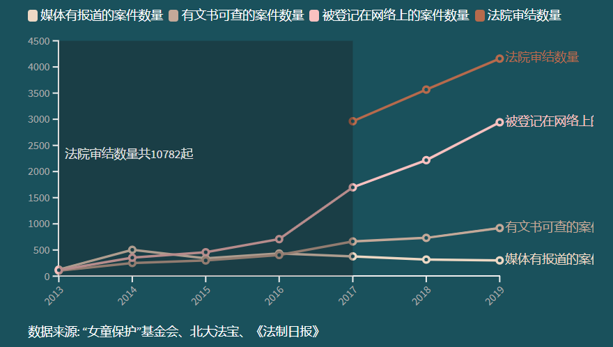
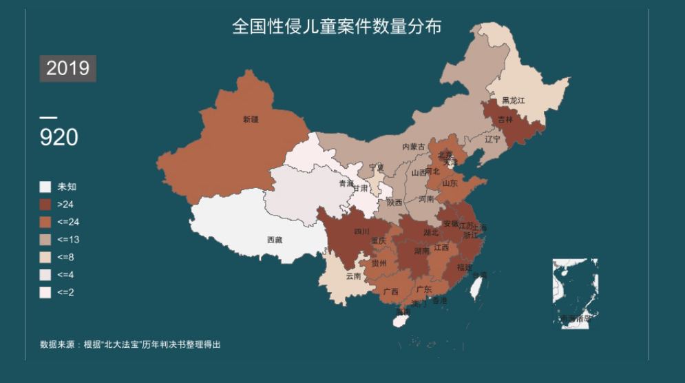

自2013年起，中华社会救助基金会儿童安全基金女童保护项目（下称“女童保护”）对每年媒体公开报道的性侵儿童案件进行统计分析。仅2019年，被曝光的案件就有301起，然而这只是冰山一角。根据北大法宝可查的法律文书以及《法制日报》的报道，可以发现2019年法院实际审结案件数量为4159起，在“北大法宝”上有案件条目可查的数量为2942件，公开文书的为920件，被曝光的案例仅占实际案件数量的7.23%。

受到社会大环境、新闻传播观念的影响，性侵儿童事件并不一定会被揭露，而有可能因为当事人或周围人消极的情感态度或者认知水平的受限而不为人所知，但随着思想观念的变化，这类案件越来越多地进入人们的视野。
“北大法宝“数据显示，1998年到2008年期间，法院审理的案件数量都维持在个位数，2013年案件数量激增为115起，2014年翻倍为353起。从审理法院的地区来看，1998年至2019年期间，浙江省累计审理758起，四川省累计审理457起，上海市累计审理347起，为全国前三，而相对来说，西藏自治区累计审理2起，海南省累计审理15起，青海省累计审理19起，则数量较少。 
我们无法确切地知晓，每年每个省份实际上发生的性侵儿童案有多少件，但过去报道量的低下一定程度上意味着媒体对于性侵儿童案件关注度的缺失，这种缺失又导致了社会大众对于此类案件的认知不足。但在2013年万宁校长带女生开房事件过后，性侵儿童案件的媒体报道进入了包容多元期，大量的社论、报纸评论、学术文献涌出，大众认知度提高。